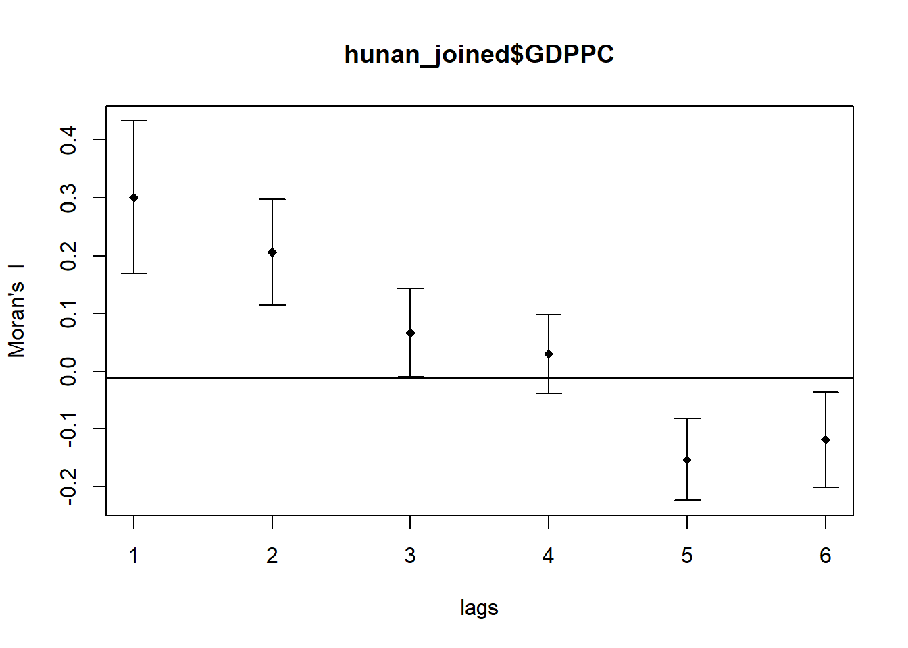
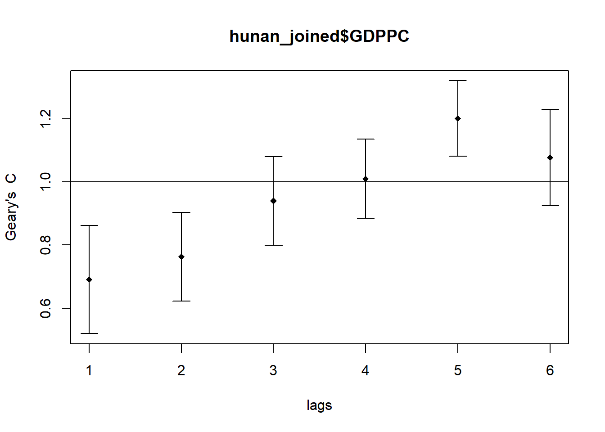

pacman::p_load(sf, spdep, tidyverse, tmap)Hands-on Exercise 5A: Global Measures of Spatial Autocorrelation
1.0 Introduction
In spatial policy, one of the main development objective of the local government and planners is to ensure equal distribution of development in the province. Our task in this study, hence, is to apply appropriate spatial statistical methods to discover if development are even distributed geographically. If the answer is No. Then, our next question will be “is there sign of spatial clustering?”. And, if the answer for this question is yes, then our next question will be “where are these clusters?”
In this case study, we are interested to examine the spatial pattern of a selected development indicator (i.e. GDP per capita) of Hunan Provice, People Republic of China.
1.1 Getting Started
In this hands-on exercise, we will be using the following packages:
sf
spdep
tidyverse
tmap
2.0 Data Acquisition
We will be using 2 datasets in this exercise:
Hunan county boundary layer
Hunan_2012.csv
3.0 Geospatial Data Handling
We will be using the st_read() from sf package to import the data into RStudio.
3.1 Importing Geospatial Data
3.1.1 Importing Geospatial Data in shapefile format
hunan_sf <- st_read(dsn = "data/geospatial",
layer = "Hunan")Reading layer `Hunan' from data source
`C:\kt526\IS415-GAA\Hands-on_Ex\Hands-on_Ex05\data\geospatial'
using driver `ESRI Shapefile'
Simple feature collection with 88 features and 7 fields
Geometry type: POLYGON
Dimension: XY
Bounding box: xmin: 108.7831 ymin: 24.6342 xmax: 114.2544 ymax: 30.12812
Geodetic CRS: WGS 84The message above reveals that the geospatial objects are polygon features. There are a total of 88 polygon features and 7 fields in hunan_sf. hunan_sf is in WGS 84 geographic coordinates systems. The bounding box provides the x extend and y extend of the data.
3.2 Importing Aspatial Data
3.2.1 Importing Aspatial Data in csv format
Since Hunan_2012.csv is in csv file format, we will use read_csv() of readr package to import it.
hunan2012 <- read_csv("data/aspatial/Hunan_2012.csv")3.3 Data Preparation
hunan_joined <- left_join(hunan_sf, hunan2012)%>%
select(1:4, 7, 15)Note:
byargument in left_join() uses NULL as default if it is not specified. A natural join will be performed join all variables in common acrosshunan_sfandhunan2012.In our case,
Countyis the common variable betweenhunan_sfandhunan2012.
4.0 Geospatial Visualization – Visualising Regional Development Indicator
Now, we are going to prepare a basemap and a choropleth map showing the distribution of GDPPC 2012 by using qtm() of tmap package.
equal <- tm_shape(hunan_joined) +
tm_fill("GDPPC",
n = 5,
style = "equal") +
tm_borders(alpha = 0.5) +
tm_layout(main.title = "Equal interval classification")
quantile <- tm_shape(hunan_joined) +
tm_fill("GDPPC",
n = 5,
style = "quantile") +
tm_borders(alpha = 0.5) +
tm_layout(main.title = "Equal quantile classification")
tmap_arrange(equal,
quantile,
asp=1,
ncol=2)
5.0 Global Measures of Spatial Autocorrelation
In this section, you will learn how to compute global spatial autocorrelation statistics and to perform spatial complete randomness test for global spatial autocorrelation.
5.1 Computing Contiguity Spatial Weights
Before we can compute the global spatial autocorrelation statistics, we need to construct a spatial weights of the study area. The spatial weights is used to define the neighbourhood relationships between the geographical units (i.e. county) in the study area.
The poly2nb() of spdep package is used to compute contiguity weight matrices for the study area.
wm_q <- poly2nb(hunan_joined,
queen=TRUE)
summary(wm_q)Neighbour list object:
Number of regions: 88
Number of nonzero links: 448
Percentage nonzero weights: 5.785124
Average number of links: 5.090909
Link number distribution:
1 2 3 4 5 6 7 8 9 11
2 2 12 16 24 14 11 4 2 1
2 least connected regions:
30 65 with 1 link
1 most connected region:
85 with 11 linksThe summary report above shows that there are 88 area units in Hunan. The most connected area unit has 11 neighbours. There are two area units with only one neighbours.
5.2 Row-standardised weights matrix
Next, we need to assign weights to each neighboring polygon. In our case, each neighboring polygon will be assigned equal weight (style=“W”).
rswm_q <- nb2listw(wm_q,
style="W",
zero.policy = TRUE)
rswm_qCharacteristics of weights list object:
Neighbour list object:
Number of regions: 88
Number of nonzero links: 448
Percentage nonzero weights: 5.785124
Average number of links: 5.090909
Weights style: W
Weights constants summary:
n nn S0 S1 S2
W 88 7744 88 37.86334 365.91475.3 Moran’s I
5.3.1 Performing Moran’s I statistics testing
In this section, we will learn how to perform Moran’s I statistics testing by using moran.test() of spdep package.
moran.test(hunan_joined$GDPPC,
listw=rswm_q,
zero.policy = TRUE,
na.action=na.omit)
Moran I test under randomisation
data: hunan_joined$GDPPC
weights: rswm_q
Moran I statistic standard deviate = 4.7351, p-value = 1.095e-06
alternative hypothesis: greater
sample estimates:
Moran I statistic Expectation Variance
0.300749970 -0.011494253 0.004348351 Question: What statistical conclusion can you draw from the output above?
5.3.2 Computing Monte Carlo Moran’s I
Next, we will perform permutation test for Moran’s I statistic using moran.mc() of spdep package. A total of 1000 simulation will be performed.
set.seed(1234)
bperm= moran.mc(hunan_joined$GDPPC,
listw=rswm_q,
nsim=999,
zero.policy = TRUE,
na.action=na.omit)
bperm
Monte-Carlo simulation of Moran I
data: hunan_joined$GDPPC
weights: rswm_q
number of simulations + 1: 1000
statistic = 0.30075, observed rank = 1000, p-value = 0.001
alternative hypothesis: greaterQuestion: What statistical conclustion can you draw fro mthe output above?
5.3.3 Visualising Monte Carlo Moran’s I
It is always a good practice for us the examine the simulated Moran’s I test statistics in greater detail. This can be achieved by plotting the distribution of the statistical values as a histogram.
mean(bperm$res[1:999])[1] -0.01504572var(bperm$res[1:999])[1] 0.004371574summary(bperm$res[1:999]) Min. 1st Qu. Median Mean 3rd Qu. Max.
-0.18339 -0.06168 -0.02125 -0.01505 0.02611 0.27593 hist(bperm$res,
freq=TRUE,
breaks=20,
xlab="Simulated Moran's I")
abline(v=0,
col="red") 
Question: What statistical observation can you draw fro mthe output above?
Challenge: Instead of using Base Graph to plot the values, plot the values by using ggplot2 package.
5.4 Geary’s C
5.4.1 Performing Geary’s C statistical testing
In this section, we will learn how to perform Moran’s I statistics testing by using geary.test() of spdep package.
geary.test(hunan_joined$GDPPC, listw=rswm_q)
Geary C test under randomisation
data: hunan_joined$GDPPC
weights: rswm_q
Geary C statistic standard deviate = 3.6108, p-value = 0.0001526
alternative hypothesis: Expectation greater than statistic
sample estimates:
Geary C statistic Expectation Variance
0.6907223 1.0000000 0.0073364 5.4.2 Computing Monte Carlo Geary’s C
Next, we will perform permutation test for Geary’s C statistic using geary.mc() of spdep package. A total of 1000 simulation will be performed.
set.seed(1234)
bperm=geary.mc(hunan_joined$GDPPC,
listw=rswm_q,
nsim=999)
bperm
Monte-Carlo simulation of Geary C
data: hunan_joined$GDPPC
weights: rswm_q
number of simulations + 1: 1000
statistic = 0.69072, observed rank = 1, p-value = 0.001
alternative hypothesis: greater5.4.3 Visualising Monte Carlo Geary’s C
Next, we will plot a histogram to reveal the distribution of the simulated values
mean(bperm$res[1:999])[1] 1.004402var(bperm$res[1:999])[1] 0.007436493summary(bperm$res[1:999]) Min. 1st Qu. Median Mean 3rd Qu. Max.
0.7142 0.9502 1.0052 1.0044 1.0595 1.2722 hist(bperm$res, freq=TRUE, breaks=20, xlab="Simulated Geary c")
abline(v=1, col="red") 
6.0 Spatial Correlogram
Spatial correlograms are great to examine patterns of spatial autocorrelation in your data or model residuals. They show how correlated are pairs of spatial observations when you increase the distance (lag) between them - they are plots of some index of autocorrelation (Moran’s I or Geary’s c) against distance.Although correlograms are not as fundamental as variograms (a keystone concept of geostatistics), they are very useful as an exploratory and descriptive tool. For this purpose they actually provide richer information than variograms.
6.1 Compute Moran’s I correlogram
We will use sp.correlogram() of spdep package is used to compute a 6-lag spatial correlogram of GDPPC. The global spatial autocorrelation used in Moran’s I. The plot() of base Graph is then used to plot the output.
Note: In order to use Moran’s I, we need set the
methodargument in sp.correlogram() toI.
MI_corr <- sp.correlogram(wm_q,
hunan_joined$GDPPC,
order=6,
method="I",
style="W")
plot(MI_corr)
However, based on the plot output, we might not be able to interpret the results completely. This is because not all autocorrelation values are statistically significant. Hence, it is important for us to examine the full analysis report by printing out the analysis results.
print(MI_corr)Spatial correlogram for hunan_joined$GDPPC
method: Moran's I
estimate expectation variance standard deviate Pr(I) two sided
1 (88) 0.3007500 -0.0114943 0.0043484 4.7351 2.189e-06 ***
2 (88) 0.2060084 -0.0114943 0.0020962 4.7505 2.029e-06 ***
3 (88) 0.0668273 -0.0114943 0.0014602 2.0496 0.040400 *
4 (88) 0.0299470 -0.0114943 0.0011717 1.2107 0.226015
5 (88) -0.1530471 -0.0114943 0.0012440 -4.0134 5.984e-05 ***
6 (88) -0.1187070 -0.0114943 0.0016791 -2.6164 0.008886 **
---
Signif. codes: 0 '***' 0.001 '**' 0.01 '*' 0.05 '.' 0.1 ' ' 1Question: What statistical observation can you draw from the plot above?
6.2 Compute Geary’s C correlogram and plot
Similar to how we compute Morgan’s I, we will use the same sp.correlogram() of spdep package is used to compute a 6-lag spatial correlogram of GDPPC. However, this time round, we will use the global spatial autocorrelation used in Geary’s C.
Note: In order to use Geary’s C, we need set the
methodargument in sp.correlogram() toC.
GC_corr <- sp.correlogram(wm_q,
hunan_joined$GDPPC,
order=6,
method="C",
style="W")
plot(GC_corr)
Let’s also print out the analysis report.
print(GC_corr)Spatial correlogram for hunan_joined$GDPPC
method: Geary's C
estimate expectation variance standard deviate Pr(I) two sided
1 (88) 0.6907223 1.0000000 0.0073364 -3.6108 0.0003052 ***
2 (88) 0.7630197 1.0000000 0.0049126 -3.3811 0.0007220 ***
3 (88) 0.9397299 1.0000000 0.0049005 -0.8610 0.3892612
4 (88) 1.0098462 1.0000000 0.0039631 0.1564 0.8757128
5 (88) 1.2008204 1.0000000 0.0035568 3.3673 0.0007592 ***
6 (88) 1.0773386 1.0000000 0.0058042 1.0151 0.3100407
---
Signif. codes: 0 '***' 0.001 '**' 0.01 '*' 0.05 '.' 0.1 ' ' 1